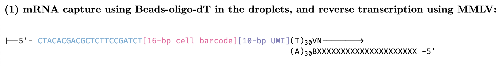
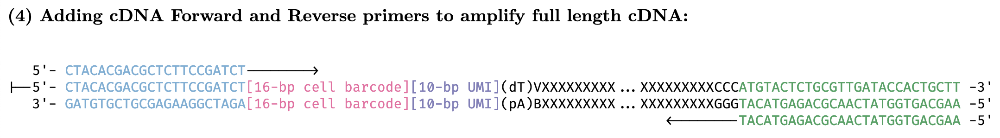

4 scRNA-seq technologies
- Although 10X genomics is probably the most popular technology for scRNA-seq, there are other flavors (see PMID 30472192 and PMID 28212749).

- 10x sequencing encapsulates a cell, reagents, and a bead w/ primer in an oil droplet (aka GEM or Gel Bead-in EMulsion).
- If you have a situation where one droplet has two cells, this is a ‘doublet’, you can also have empty droplets where there’s no cell encapsulated.

- After encapsulation of cells, beads, and reagents in the oil droplets, the bead is dissolved and releases primers.
- The poly (dT) primers are used for generating the gene expression libraries.
- The capture sequence primers are shown in a lighter shading because they are only used in situations where you’d like to add an extra channel of information to your experiment by using feature barcoding (cell-surface protein characterization, multiplexing, etc.).
Let’s go over the details of how the library prep works

The polyA mRNAs are captured using the oligo(dT) on the beads, MMLV (Moloney Murine Leukemia Virus) reverse transcriptase synthesizes complementary strand to the fragment thats captured.
 The RT adds some extra Cs on the end.
The RT adds some extra Cs on the end.

The template-switching oligo is added so we can continue across the other strand.

Add primers to amplify full length cDNA
Fragment cDNA, perform A-tailing

At this point we add the Truseq adapters, product 3 is what you’ll actually sequence.

Add the library PCR primers 1 and 2 to amplify the library
The final library structure looks like the above image – the exact length of the UMI might depend on which chemistry you’re using.

The actual sequencing looks like the above image – Truseq Read 1 uses bottom strand as template and sequences the bacrode + UMI, Sample Index primer sequences the sample index using bottom strand as template. Regenerate clusters and Truseq Read 2 primer sequences the second read using the top strand as template.

- The above steps assume a single index library, if you’re using dual indexes there will be another sample index between the P5 and Truseq Read 1 (see above image).
- Dual indexed libraries are beneficial to help prevent index hopping.
- Here is an excellent resource for information about the resulting library structures for 10x libraries (and other single cell technologies like Drop-seq or SMART-seq) and was our resource for most of this section.